측량기능사 (2004-02-01 기출문제)
1과목: 임의 구분
1. 수평각 관측에 있어서 동일 시준점의 1대회에 대한 정위, 반위 초수의 합을 무엇이라 하는가?
- 관측차
- 배각차
- 교차
- 배각
(정답률: 47%)

2. 평판 세우기의 세 가지 조건 중에서 오차에 가장 큰 영향을 끼치는 것은 다음 중 어느 것인가?
- 방향맞추기
- 수평맞추기
- 중심맞추기
- 편심맞추기
(정답률: 69%)
3. 다음 평판 측량 방법 중에서 복전진법에 관한 설명이다. 잘못된 것은?
- 모든 측점에 차례대로 평판을 세운다.
- 복도선법이라고도 한다.
- 한 점에서 많은 측점을 시준할 수 없을 때 사용하는 방법이다.
- 시가지에서는 적합하지 않다.
(정답률: 50%)
4. 측량에 관한 설명으로 다음 중 옳지 않은 것은?
- 측량이란, 지구 표면상에 있는 모든 점들의 상대적 위치를 측정하는 작업이다.
- 측량지역의 현장답사 실측작업 등을 외업이라 한다.
- 측량 외업의 자료를 얻어 지도의 작성, 필요한 값의 계산 등을 내업이라 한다.
- 우리나라의 측량원점중 동부원점의 경도와 위도는 동경 126° 북위 36° 이다.
(정답률: 75%)
5. 측량의 법규에 따른 분류가 아닌 것은?
- 기본측량
- 공공측량
- 일반측량
- 평면측량
(정답률: 63%)
6. 인공 위성을 이용한 범세계적 위치 결정의 체계로 정확히 위치를 알고 있는 위성에서 발사한 전파를 수신하여 관측점까지의 소요시간을 측정함으로써 관측점의 3차원 위치를 구하는 측량은?
- 전자파 거리측량
- 육분의 측량
- GPS측량
- 스타디아 측량
(정답률: 91%)
7. 지구타원체의 측정량에서 편평률을 맞게 설명한 식은? (단, a는 적도 반지름, b는 극 반지름)
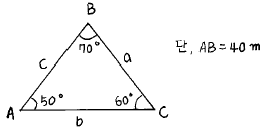
- b/b - a
- b - a/b
- a/a - b
- a - b/a
(정답률: 40%)
8. 한 측점에 평판을 세우고 그 점의 주위에 있는 목표점의 방향선과 거리를 측정하여 트래버스의 형태나 지형을 측정하는 방법은?
- 후방교회법
- 전진법
- 방사법
- 교회법
(정답률: 67%)
9. 기준선을 자오선으로 하여 어느 측선까지 시계방향으로 잰 각을 무엇이라 하는가?
- 방향각
- 방위각
- 연직각
- 수평각
(정답률: 76%)
10. 어느 거리를 세구간으로 나누어 관측한 결과 구간별 확률 오차가 각각 ± 0.003m, ± 0.0⑤m, ± 0.007m 라면 전 거리에 대한 오차는?
- ± 0.0⑤m
- ± 0.007m
- ± 0.008m
- ± 0.009m
(정답률: 34%)
11. 교호 수준 측량에 대한 내용이 아닌 것은 다음 중 어느 것인가?
- 두점의 표고차를 2회 산출하여 평균한다.
- 양안에서 표척과 기계간의 거리는 같게 한다.
- 기계를 세우는 점과 측점은 동일한 선상에 있으면 좋다.
- 두점 사이의 연직각과 거리를 측정한다.
(정답률: 40%)
12. 도상오차를 0.2mm 까지 허용하는 평판측량에서 축척을 1/600로 할 때 지상에서의 구심오차의 한계는?
- 5cm
- 6cm
- 7cm
- 8cm
(정답률: 56%)
13. 다음 중 앨리데이드 검사와 조정으로 알맞지 않은 것은?
- 앨리데이드의 자 끝이 직선일 것
- 양시준판을 자의 밑면에 대하여 앞뒤로 기울지 않고 직각이 되게 할 것
- 기포관축과 자의 밑면이 수직이 되도록 할 것
- 양시준판이 자의 밑면에 대하여 좌우로 기울지 않고 직각이 되게 할 것
(정답률: 34%)
14. 트랜싯의 시준선을 바르게 설명한 것은?
- 대물렌즈의 광심과 대안렌즈의 광심을 연결한 직선
- 대물렌즈의 광심과 수평축과 연직축의 교점을 연결한 직선
- 렌즈위의 어느 한점을 통하여 입사하는 광선과 통과 하는 광선이 평행하게 되는 직선
- 대물렌즈의 광심과 십자선의 교점을 연결한 직선
(정답률: 28%)
15. 그림과 같이 진행 방향의 우측 교각을 관측했을 때 CD측선의 방위각은 얼마인가?
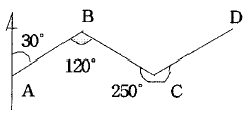
- 10°
- 20°
- 30°
- 40°
(정답률: 36%)
16. 다음 그림에서 NO.4의 지반고를 승강식 야장방법에 의하여 구한 값은? (단, 측점1의 지반고는 25.000m)
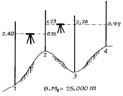
- 23.09m
- 24.12m
- 25.88m
- 26.91m
(정답률: 19%)
17. 수준측량의 경중률에 관한 설명으로 옳은 것은?
- 경중률은 오차의 제곱에 반비례한다.
- 경중률은 거리에 비례한다.
- 경중률은 오차의 제곱근에 반비례한다.
- 경중률은 측정횟수에 반비례한다.
(정답률: 21%)
18. 종단 및 횡단수준측량에서 중간점(I.P)이 많은 경우 편리한 방법은?
- 기고식
- 고차식
- 승강식
- 교호수준식
(정답률: 68%)
19. 데오돌라이트(Theodolite)의 대물렌즈를 합성렌즈로 사용하는 주된 이유는?
- 확대
- 구면 수차나 색 수차
- 밝기
- 정립 허상
(정답률: 53%)
20. 다음 그림과 같이 교호 수준측량을 실시하였다. 두점 A,B의 고저차는 얼마인가? (단, aA = Bb)
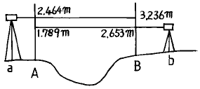
- 49.6㎝
- 79.6㎝
- 81.8㎝
- 94.2㎝
(정답률: 36%)
2과목: 임의 구분
21. 목표물과 +자 교선이 정확히 일치하지 않을 때 생기는 오차는?
- 수평축 오차
- 시준 오차
- 구심 오차
- 연직축 오차
(정답률: 49%)
22. 그림과 같은 다각측량에서 CD 측선의 방위는?
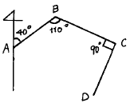
- N 20° E
- S 20° E
- N 20° W
- S 20° W
(정답률: 38%)
23. 전장 2,000m의 트래버스 측량을 한 결과 그 정도가 1/4,000이였다. 이 트래버스 측량의 폐합오차는?
- 0.2m
- 0.5m
- 0.8m
- 1.2m
(정답률: 36%)
24. 폐합트래버스 측량에서 거리의 총합이 0.5km이고, 위거의 오차가 -0.04m, 경거의 오차가 +0.03m일 때 폐합비는?
- 1/500
- 1/5000
- 1/10000
- 1/50000
(정답률: 25%)
25. 그림에서 AC(b)변의 길이는?
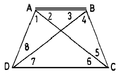
- 25.40m
- 35.38m
- 43.40m
- 51.48m
(정답률: 30%)
26. 다음 중 단열삼각망의 사용이 적당한 측량지역은?
- 복잡한 지형의 골조측량
- 하천조사를 위한 측량
- 넓은 지역의 골조측량
- 시가지의 골조측량
(정답률: 49%)
27. 그림과 같은 사변형에서 조건식의 총 수는?
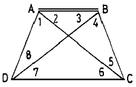
- 1개
- 2개
- 3개
- 4개
(정답률: 67%)
28. 평탄지에서 15km 떨어진 점을 시준하는 경우 시준표의 높이는 어느 정도로 하는 것이 좋은가? (단, 지구반경 R = 6370km)
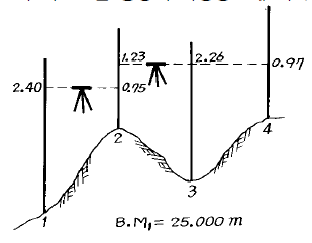
- 14.24m
- 15.42m
- 17.66m
- 24.06m
(정답률: 25%)
29. 내륙에서 멀리 떨어져 있는 섬에서는 내륙의 기준면을 직접 연결할 수 없어 하천이나 항만공사 등에서 필요에 따라 편리한 기준면을 정하는 경우가 있는데 이것을 무엇이라 하는가?
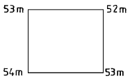
- 수준면
- 기준면
- 수준 원점
- 특별 기준면
(정답률: 51%)
30. 트래버어스측량의 순서로 옳은 것은?
- 답사 - 거리 및 각의 측정 - 선점 - 조표 - 계산 및 제도
- 답사 - 선점 - 조표 - 계산 및 제도 - 거리 및 각의 측정
- 답사 - 거리 및 각의 측정 - 계산 및 제도 - 선점 - 조표
- 답사 - 선점 - 조표 - 거리 및 각의 측정 - 계산 및 제도
(정답률: 64%)
31. 삼각측량에서 삼각형의 모양은 어느 것이 이상적인가?
- 이등변 삼각형
- 정 삼각형
- 직각 삼각형
- 임의의 삼각형
(정답률: 74%)
32. 다음 중 가장 높은 정밀도를 얻을 수 있는 삼각망은?
- 단열 삼각망
- 사변형 삼각망
- 유심 다각망
- 단순 삼각망
(정답률: 77%)
33. 등고선의 간격이 20m라고 하는 말을 바르게 나타낸 것은?
- 경사 거리 20m
- 수평 거리 20m
- 수직 거리 20m
- 곡선 거리 20m
(정답률: 47%)
34. 각을 관측할 때 시차를 없앨 수 있는 방법은?
- 시준선을 완전히 조정한다.
- A, B버어니어의 읽음값을 평균한다
- 망원경 정.반위의 읽음값을 평균한다.
- 제작상 결함으로 조정할 수 없다
(정답률: 52%)
35. 다음은 트래버스 측량에서 선점 및 표지 설치시의 주의사항이다. 이에 적당하지 않은 것은?
- 시준하기 좋고 지반이 견고한 장소일 것
- 후속되는 측량, 특히 세부측량에 편리할 것
- 측점간의 거리는 가능한 한 비슷하고 고저차가 크지 않을 것
- 측선의 거리는 될 수 있는 대로 짧게 할 것
(정답률: 72%)
36. 교각이 42° 16′ 30″ 인 곳에 반경 100m 의 단곡선을 설치할 때 접선장은?
- 38.662m
- 48.662m
- 90.913m
- 80.913m
(정답률: 30%)
37. 입체시된 항공사진상에서 지형의 경사도는 어떻게 나타나는가?
- 실제 경사도보다 크게 나타난다.
- 실제 경사도와 동일하게 나탄난다.
- 항공사진의 축척에 따라 다르게 나타난다.
- 실제 경사도보다 작게 나타난다.
(정답률: 16%)
38. 지형도의 표시 방법에서 명암을 2∼3색 이상으로 도면에 채색하여 기복의 모양을 표시하는 방법은?
- 우모법
- 음영법
- 등고선법
- 점고법
(정답률: 84%)
39. 다음 그림과 같은 표고를 가진 정사각형 땅을 같은 높이로 정지하고자 한다. 표고를 얼마로 하면 되겠는가?
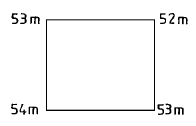
- 52m
- 53m
- 54m
- 55m
(정답률: 57%)
40. 지형도에 이용되는 등고선의 설명 중 틀리는 것은?
- 등고선은 도면내 또는 도면외에서 반드시 폐합한다.
- 등고선 간격은 지표면상의 경사가 급한 경우에는 넓고 완경사인 경우에는 좁다.
- 등고선은 일반적으로 교차하지 않으나 절벽이나 동굴에서는 교차할 수 있다.
- 동일 등고선상에 있는 모든 점의 표고는 같다.
(정답률: 73%)
3과목: 임의 구분
41. 세변의 길이가 각각 6.3m, 10.5m, 8.2m인 지형의 면적은 얼마인가?
- 25.8m2
- 26.8m2
- 27.8m2
- 28.8m2
(정답률: 41%)
42. 초점거리 155mm의 카메라로 해면고도 2,950m의 비행기로부터 평균해발 500m의 평지를 촬영하면 사진축척은 약 얼마인가?
- 1/12,500
- 1/15,800
- 1/17,600
- 1/20,608
(정답률: 42%)
43. 항공사진 촬영에서 일반적인 중복도는?
- 종 30%, 횡 60%
- 종 40%, 횡 50%
- 종 50%, 횡 40%
- 종 60%, 횡 30%
(정답률: 40%)
44. 전파 거리 측량기(electronic wave distance measurment)의 반송파는?
- 레이저 광선
- 극초단파
- 적외선
- 가시광선
(정답률: 46%)
45. 원곡선에서 교각 I=60恩, 반경 R=500m 일 때 곡선장은 얼마인가?
- 323.6m
- 423.6m
- 523.6m
- 623.6m
(정답률: 42%)
46. 단곡선 설치에 필요한 명칭과 기호로 짝지어진 상태가 잘못된 것은?
- 곡선시점 : B.C.
- 장현 : T.L.
- 곡선길이 : C.L.
- 곡선 종점 : E.C.
(정답률: 50%)
47. 노선측량에서 말뚝과 말뚝사이의 간격은 일반적으로 얼마인가?
- 10m
- 20m
- 30m
- 40m
(정답률: 67%)
48. 각주의 양 단면적 A1= 2.6m2 , A2=1.8m2 , 중앙단면적이 Am=2.2m2 이고 길이가 13.2m일 때, 중앙단면법으로 구한체적은?
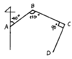
- 19.04m3
- 29.04m3
- 34.04m3
- 42.04m3
(정답률: 46%)
49. 광파 거리 측정기의 장점에 해당되지 않는 것은?
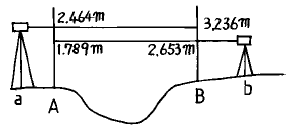
- 지형의 영향을 받는다.
- 측정 거리가 100m 이상이면 높은 정밀도의 성과를 얻을수 있다.
- 작업 인원이 작고, 작업 속도가 신속하다.
- 트래버스 측량 및 삼변측량 등과 같은 기준점 측량에 효과적이다.
(정답률: 26%)
50. 1:25,000일 때 등고선의 간격은 얼마인가?
- 주곡선10m, 계곡선50m, 간곡선5m, 조곡선2.5m
- 주곡선10m, 계곡선20m, 간곡선5m, 조곡선2.5m
- 주곡선10m, 계곡선20m, 간곡선30m, 조곡선40m
- 주곡선10m, 계곡선15m, 간곡선20m, 조곡선25m
(정답률: 46%)
51. 측량법 용어 정의에서 측량 기록이라 함은?
- 당해 측량에서 얻은 최종결과
- 측량성과를 얻을 때 까지 측량에 관한 작업의 기록
- 측량을 끝내고 내업에서 얻은 최종 결과의 기록
- 측량 계획과 실시결과에 대한 기록
(정답률: 49%)
52. 기본 측량에 종사하는 자가 측량을 실시하기 위하여 전답이나 기타 공작물을 부득이한 경우 사용하였을 경우의 그 손실은 누가 보상하는가?
- 각 관할경찰서장
- 건설교통부장관
- 국립지리원장
- 시장 및 도지사
(정답률: 40%)
53. 건설교통부장관은 일반측량의 성과가 다음 목적을 위하여 필요하다고 인정되는 경우에는 일반측량의 실시자에게 측량성과 제출을 요구할 수 있는데 해당되지 않는 것은?
- 기본측량에의 이용
- 측량의 정확성 확보
- 측량의 중복배제
- 측량에 관한 자료수집
(정답률: 25%)
54. 기본측량의 실시공고는 일간신문에 게재하거나 또는 시·도의 게시판에 몇 일이상 게시하는 방법으로 하는가?
- 3일
- 5일
- 7일
- 15일
(정답률: 55%)
55. 측량업의 등록증 또는 등록수첩을 대여한 자 및 그 상대방이 받게되는 벌칙은?
- 2년 이하의 징역 또는 500만원 이하의 벌금
- 1년 이하의 징역 또는 300만원 이하의 벌금
- 200만원 이하의 벌금
- 200만원 이하의 과태료
(정답률: 39%)
56. 측량법상의 벌칙중 2년 이하의 징역 또는 500만원 이하의 벌금에 처할 수 있는 경우는?
- 고의로 측량성과를 사실과 다르게한 자
- 입찰행위를 방해한 자
- 정당한 사유없이 측량의 실시를 방해한 자
- 측량업 등록을 하지 아니하고 측량업을 영위한 자
(정답률: 22%)
57. 관할구역안에 있는 측량표를 감시할 의무가 있는 자는?
- 경찰서장
- 국립지리원장
- 도지사
- 구청장
(정답률: 27%)
58. 국립지리원장이 간행하는 지도의 축척이 아닌 것은?
- 1/1000
- 1/1200
- 1/50만
- 1/100만
(정답률: 44%)
59. 측량업 등록을 한 자는 상호가 변경 되었을 때 변경이 있는 날로부터 며칠이내에 변경 등록을 하여야 하는가?
- 7일
- 10일
- 20일
- 30일
(정답률: 50%)
60. 측량심의회의 구성원에 적당하지 않은 사람은?
- 측량에 관한 학식이 있는 자
- 관계행정기관의 공무원
- 국립지리원장
- 건설교통부장관
(정답률: 11%)